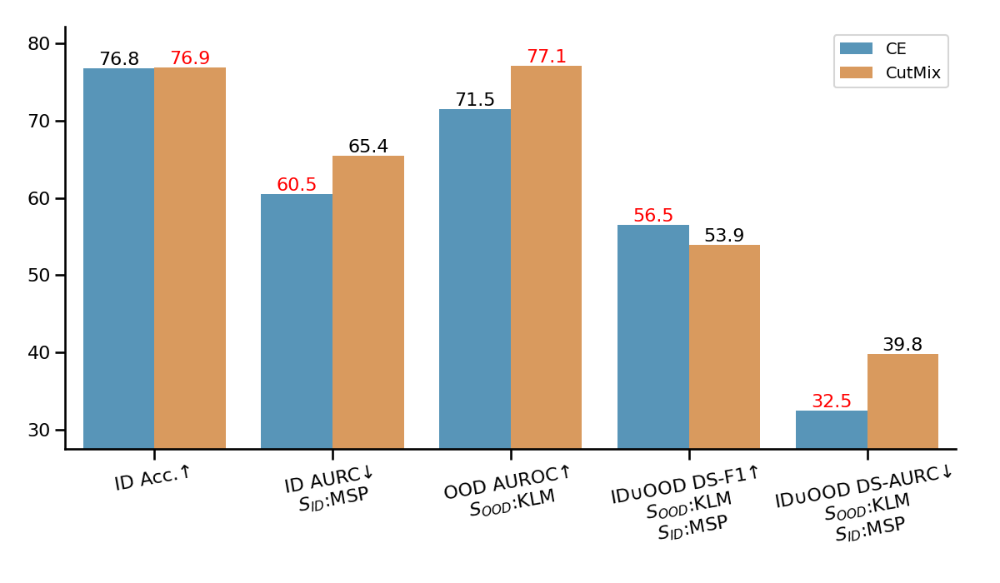
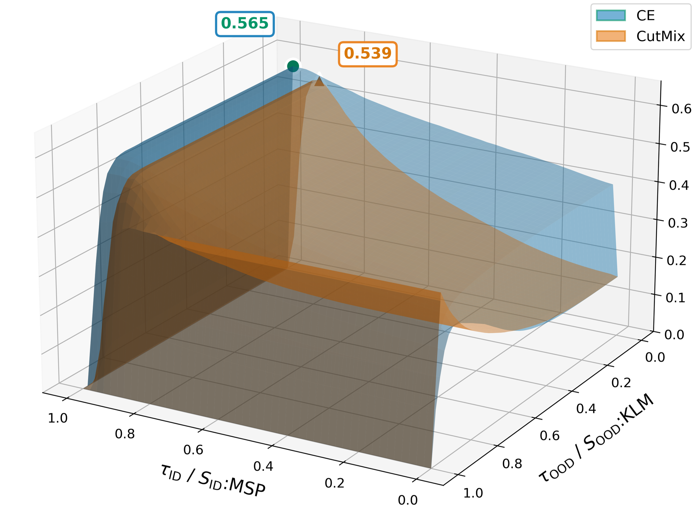
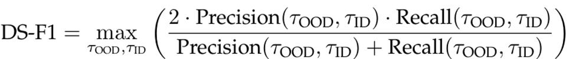
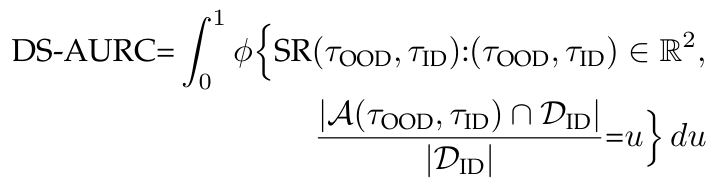
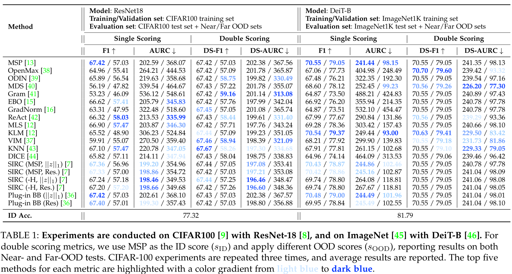
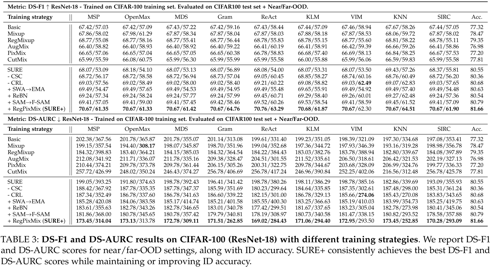
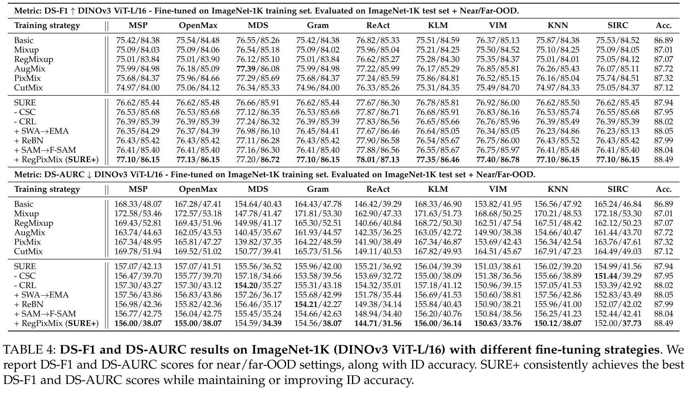

Traditional approaches fail to capture the complete reliability picture

Comparison between Cross-Entropy (CE) and CutMix training. While CutMix improves OOD detection, it shows lower DS-F1 performance compared to CE.

3D visualization of DS-F1 scores as a function of τ_ID and τ_OOD. CE achieves higher maximum DS-F1 (0.565) compared to CutMix (0.539).
Interactive visualization comparing CE and CutMix. You can rotate, zoom, and pan to explore the surface.
Why single-score metrics are insufficient for reliability assessment
Existing approaches treat misclassification detection and OOD detection as separate problems. They optimize for either ID accuracy or OOD detection, but not both jointly. This leads to:
We propose Double Scoring (DS) metrics: DS-F1 and DS-AURC, which simultaneously evaluate a model's ability to identify misclassifications and detect OOD samples within a unified framework. This enables comprehensive reliability assessment.
Double Scoring F1 jointly considers misclassification detection and OOD detection. More details see paper.

Double Scoring AURC extends risk-coverage framework to incorporate OOD detection. More details see paper.


Comprehensive comparison on CIFAR-100 (ResNet-18) and ImageNet (DeiT-B). Double Scoring metrics (DS-F1, DS-AURC) provide more comprehensive reliability assessment by jointly considering misclassification detection and OOD detection performance.
A powerful training framework to maximize joint reliability
We propose SURE+, a comprehensive training framework that combines four key components to achieve state-of-the-art reliability performance while maintaining or improving classification accuracy.
Regularized mixup augmentation for improved calibration and robustness
Regularized pixel-level mixup that preserves semantic information while improving robustness
Friendly sharpness-Aware minimization for finding flat minima with better generalization
Exponential Moving Average with Re-normalized Batch Normalization for stable training and improved performance
Comprehensive evaluation on CIFAR-100 and ImageNet-1K

DS-F1 and DS-AURC results comparing different training strategies. SURE+ consistently achieves the best performance across various post-processors.

Large-scale experiments with DINOv3 ViT-L/16 show that our training framework improves robustness and reliability while preserving classification accuracy.
If you find this work useful, please cite our paper
@article{li2026from,
title={From Misclassifications to Outliers: Joint Reliability Assessment in Classification},
author={Li, Yang and Sha, Youyang and Wang, Yinzhi and Hospedales, Timothy and Hu, Shell Xu and Shen, Xi and Yu, Xuanlong},
journal={arXiv preprint arXiv:2603.03903},
year={2026}
}